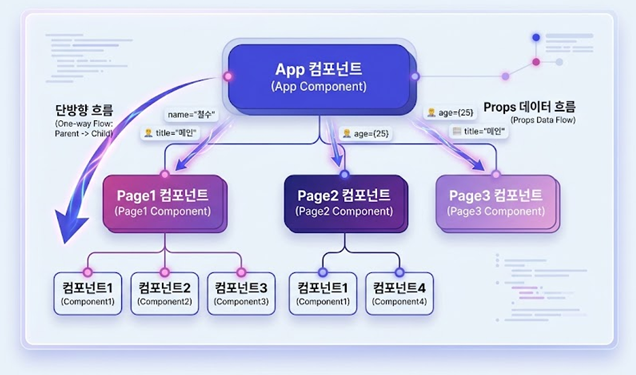

01
컴포넌트 (Component)

컴포넌트는 하나의 기능이나 역할을 수행하도록 나누어진 독립적인 구성 요소를 의미합니다.
레고 블록처럼 여러 컴포넌트를 조합해서 복잡한 사용자 인터페이스(UI)를 효율적으로 설계할 수 있습니다.
02
App 컴포넌트
애플리케이션 전체 구조를 담당하는 시작점으로, 전체 앱의 레이아웃을 정의하고 전역 설정을 관리합니다.
2.1. App 컴포넌트 구조 예시
App 컴포넌트
├── Page1 컴포넌트
│ ├── 컴포넌트1
│ ├── 컴포넌트2
│ └── 컴포넌트3
├── Page2 컴포넌트
│ ├── 컴포넌트1
│ └── 컴포넌트4
└── Page3 컴포넌트
03
Props
Props는 컴포넌트에 전달하는 데이터(속성)를 의미합니다.
<Profile name="철수" age={25} />
3.1. Props의 특징
- 단방향 흐름: 데이터는 항상 부모에서 자식 방향으로만 전달됩니다.
- 읽기 전용: 자식 컴포넌트에서 받은 props를 직접 수정할 수 없습니다.
- 다양한 타입: 문자열, 숫자, 배열, 객체, 함수, 심지어 다른 컴포넌트까지 전달 가능합니다.
- 객체 형태: 모든 전달 값은 하나의 객체(Object) 형태로 묶여 전달됩니다.
3.2. props 전달 흐름
부모 컴포넌트: 속성을 통해 데이터 전달
<Greeting name="철수" age={25} />
자식 컴포넌트: 구조 분해 할당으로 받기
function Greeting({ name, age }) { return ( <h1>안녕하세요, {name}님! ({age}세)</h1> ); }
04
컴포넌트 작성 규칙
- React는 주로 함수를 이용하여 컴포넌트를 작성합니다.
- 매개변수로 props를 받고, 반드시 JSX를 리턴해야 합니다.
- 함수 이름은 반드시 대문자로 시작해야 합니다. (소문자 시작 시 일반 HTML 태그로 인식)
// 컴포넌트 기본 형태 function ComponentName({ props }) { return ( <div> {/* JSX 내용 */} </div> ); }
Comments